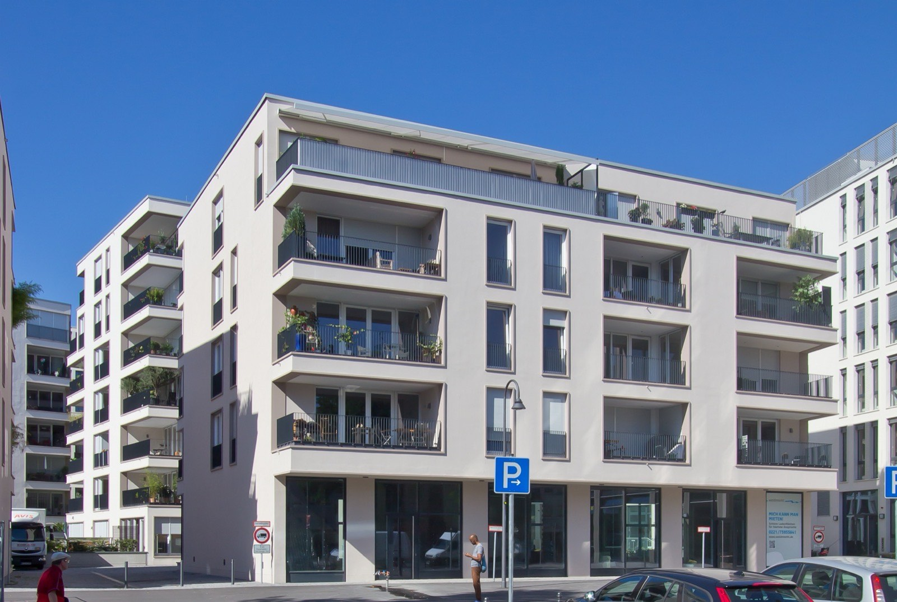

Immobilie in der Kölner Altstadt-Süd verkaufen?Die kleinsten Wohnungen der Stadt — und jedes Jahr werden es weniger.
60,5 Quadratmeter misst hier die durchschnittliche Wohnung, der niedrigste Wert aller 86 Kölner Stadtteile. Und 2025 ist der Bestand sogar geschrumpft. Was das für Ihren Verkaufspreis bedeutet, steht weiter unten in Zahlen.
Was könnte Ihre Wohnung in der Altstadt-Süd erzielen?
In sechs Schritten zu einer realistischen Einschätzung. Kostenlos, unverbindlich und ohne Vertrag. Womit fangen wir an?
Andere Objektart wählen60,5 Quadratmeter — kein Stadtteil Kölns wohnt kleiner
Die Stadt Köln führt für jeden ihrer 86 Stadtteile die durchschnittliche Wohnungsgröße. Altstadt-Süd steht dabei am Ende der Liste: 60,5 Quadratmeter, gegenüber 77,3 im Kölner Mittel. Knapp dahinter folgen Humboldt/Gremberg mit 60,6 und Kalk mit 60,7 — Stadtteile, die sonst wenig mit der Altstadt gemein haben.
Dazu passt der Rest des Bildes: 70,4 Prozent der 18.438 Haushalte bestehen aus einer einzigen Person, stadtweit sind es 51,9. Nur 7,4 Prozent leben mit Kindern gegenüber 17,7 in Köln — nach Altstadt-Nord der zweitniedrigste Wert der Stadt. Wer hier eine Zweizimmerwohnung verkauft, bedient also nicht eine Nische, sondern den Kern des Marktes.
Und der Bestand wächst nicht — er schrumpft
Das ist die Zahl, die auf keiner Maklerseite steht und für Verkäufer trotzdem die wichtigste sein dürfte. Die Statistik der Stadt weist für Altstadt-Süd im Jahr 2025 einen Wohnungsbestand aus, der um 37 Wohnungen kleiner geworden ist. Von 86 Kölner Stadtteilen gilt das für genau zwei: Riehl mit minus 50 und Altstadt-Süd mit minus 37. Überall sonst wurde unter dem Strich gebaut.
Woran das im Einzelnen liegt, weist die Statistik nicht aus. Sie zählt den Saldo, nicht die Gründe. In einem vollständig bebauten Altstadtviertel kommen mehrere in Frage: Wohnungen werden zusammengelegt, Erdgeschosse gewerblich genutzt, Gebäude umgenutzt. Für den Markt ist die Wirkung dieselbe.
Für Sie als Eigentümer folgt daraus ein einfacher Zusammenhang: Ein Angebot, das nicht wächst, trifft auf eine Nachfrage, die nicht kleiner wird. Das erklärt, warum die Altstadt-Süd mit 5.841 Euro je Quadratmeter zu den drei teuersten Stadtteilen Kölns gehört — und warum eine Bestandswohnung hier nicht in Konkurrenz zu einem Neubauquartier steht, weil es keines gibt.
Es bedeutet ausdrücklich nicht, dass jeder Preis durchsetzbar wäre. Knappheit verschafft Ihnen Zeit und Verhandlungsposition — sie erspart Ihnen aber nicht die Arbeit an den Unterlagen. Gerade in Häusern mit vielen kleinen Einheiten fragen Käufer früh nach Hausgeld, Rücklage und beschlossenen Sanierungen. Wer darauf keine Antwort hat, verliert die Verhandlungsposition wieder, die ihm der knappe Markt verschafft hat.
Wie groß ist Ihre Wohnung — für diesen Stadtteil?
Dieselbe Quadratmeterzahl bedeutet in Köln je nach Stadtteil etwas ganz anderes. Stellen Sie Ihre Wohnfläche ein und sehen Sie, wo sie zwischen Altstadt-Süd, dem Kölner Mittel und einem Vorort wie Weiden liegt.
Der Stadtteilschnitt liegt bei 60,5 m² je Wohnung.
- gegenüber Altstadt-Süd (60,5 m²)
- −1 m²
- gegenüber Köln (77,3 m²)
- −17 m²
- gegenüber Weiden (86,4 m²)
- −26 m²
Der Quadratmeterwert ist der Durchschnitt aus 126 beurkundeten Weiterverkäufen des Jahres 2025 und keine Bewertung Ihrer Wohnung. Etage, Aufzug, Zustand, Grundriss, Ausrichtung, Hausgeld und Erhaltungsrücklage verschieben den Wert erheblich. Was Ihr Objekt erzielen kann, klärt die kostenlose Bewertung.
Marktdaten Köln-Altstadt-Süd
- Bodenrichtwert
- 2.090–2.420 €/m²Median 2.255 · nur 2 Zonen · Stichtag 1.1.2026
- Wohnung, Weiterverkauf
- 5.841 €/m²126 Kaufverträge 2025
- Wohnung, nach Aufteilung
- 6.708 €/m²24 Kaufverträge 2025
- Wohnungsbestand
- 18.610 Wohnungen60,5 m² im Schnitt · Saldo 2025: −37
Amtliche Werte — Quellen und Methodik.
Warum die Altstadt-Süd zu den drei teuersten Stadtteilen gehört
Mit 5.841 Euro je Quadratmeter im Weiterverkauf liegt der Stadtteil auf Rang drei aller Kölner Stadtteile mit nennenswertem Handel — hinter Bayenthal mit 5.921 und Altstadt-Nord mit 5.894 Euro, aber vor Neustadt-Süd und Marienburg. Anders als bei den beiden vor ihm beruht die Zahl auf einer breiten Grundlage: 126 beurkundete Verkäufe.
Beim Boden ist die Lage noch eindeutiger. BORIS NRW weist für die Altstadt-Süd zum 1. Januar 2026 nur zwei Wohnbauland-Zonen aus, 2.090 und 2.420 Euro je Quadratmeter. Zum Vergleich: Weiden hat elf Zonen mit einer Spanne von 850 bis 1.450 Euro. Hier ist der Boden also durchgehend teuer und fast überall gleich teuer.
Praktisch heißt das: Der Preisunterschied zwischen zwei Wohnungen entsteht in diesem Stadtteil kaum aus der Adresse. Er entsteht aus dem Objekt — Etage, Aufzug, Schnitt, Ausrichtung, Zustand, Hausgeld, Erhaltungsrücklage, beschlossene Maßnahmen der Eigentümergemeinschaft. Genau dort lohnt sich die Vorbereitung.
Aufteilung: hier ein spürbarer, aber kein außergewöhnlicher Aufschlag
Wohnungen, die 2025 erstmals nach der Aufteilung eines Mietshauses verkauft wurden, erzielten 6.708 Euro je Quadratmeter — 14,8 Prozent über dem Bestand, ermittelt aus 24 Fällen. Das ist ein mittlerer Wert im Kölner Vergleich: In Neustadt-Süd sind es 31 Prozent, in Weiden nur 2.
Rechtlich ist der Weg offen: Nordrhein-Westfalen hat keine Verordnung nach § 250 Baugesetzbuch erlassen, anders als Bayern, Berlin und Hamburg (Übersicht des Deutschen Notarinstituts vom 20. Januar 2026). Zu bedenken bleibt die Mieterschutzverordnung NRW vom 1. März 2025: Bei umgewandelten und verkauften Wohnungen ist eine Kündigung wegen Eigenbedarfs oder zur Verwertung in Köln erst acht Jahre nach dem Verkauf möglich. Die Marktseite rechnen wir Ihnen vor, die rechtliche Prüfung gehört zu Notar oder Fachanwalt.
Richtwerte, kein Preisschild. Für Ihr Objekt zählt der Zustand im Detail — dafür rechnen wir kostenlos eine Wertindikation oder kommen persönlich vorbei.
Unser Büro steht in diesem Stadtteil
Highseller Immobilien & Finanzen hat seinen Sitz im Kranhaus 1, Im Zollhafen 18 — mitten in der Altstadt-Süd. Das ist kein Vermarktungsargument, sondern ein praktischer Umstand: Besichtigungen im Severinsviertel, am Waidmarkt oder im Rheinauhafen sind für uns Wege von wenigen Minuten, keine Anfahrt.
Für Sie hat das zwei konkrete Folgen. Erstens sind kurzfristige Zweitbesichtigungen möglich, ohne dass daraus ein Termin in zwei Wochen wird — und gerade die zweite Besichtigung entscheidet häufig. Zweitens kennen wir die Häuser, um die es geht, oft schon: welche Eigentümergemeinschaften saniert haben, wo der Aufzug fehlt, welche Innenhöfe ruhig sind.
Dazu kommt die Finanzierungsseite. Als Immobiliardarlehensvermittler nach § 34i GewO sehen wir früh, welche Interessenten ihre Finanzierung tatsächlich darstellen können. In einem Stadtteil, in dem eine durchschnittliche Wohnung rechnerisch bei rund 350.000 Euro liegt, sortiert das die Besichtigungsliste erheblich.
Vier Lagen, die sich im Verkauf deutlich unterscheiden
Der Stadtteil ist klein und wird trotzdem oft in einen Topf geworfen. Für die Vermarktung ist das zu grob — diese vier Bereiche sprechen unterschiedliche Käufer an.
Der Rheinauhafen ist die jüngste Lage: Kranhäuser, umgebaute Speicher, Neubauten am Wasser. Hier zählen Grundriss, Ausstattung, Blickbeziehung zum Rhein und die Frage, ob ein Stellplatz dabei ist. Käufer vergleichen weniger mit dem Rest des Stadtteils als mit anderen hochwertigen Neubaulagen der Stadt.
Das Severinsviertel im Süden — der nördliche Teil dessen, was Kölner Vringsveedel nennen — steht für gewachsene Kleinteiligkeit, Gastronomie und Geschäfte in Gehweite. Wichtig zu wissen: Die Severinstraße liegt größtenteils in diesem Stadtteil, südlich der Severinstorburg beginnt dagegen Neustadt-Süd. Für die Bewertung ist das kein Detail, denn es entscheidet über Vergleichsobjekte und Bodenrichtwert.
Um Waidmarkt und Blaubach liegt der Bereich, in dem in den vergangenen Jahren am sichtbarsten neu gebaut wurde. Wohnungen mit Balkon, Aufzug und Tiefgarage treffen hier auf Bestand aus den Wiederaufbaujahrzehnten — zwei Angebote, die im selben Straßenzug um dieselben Interessenten werben.

Rund um Georgsplatz und Kartäuserwall, zum Grüngürtel und zur Ubierring-Grenze hin, wird es ruhiger. Diese Lagen sprechen Käufer an, die Innenstadt wollen, aber nicht die Hauptstraße — ein Argument, das im Exposé ausdrücklich stehen sollte, weil es sich aus einer Adresse allein nicht erschließt.
Was in jeder dieser Lagen zählt
Weil der Boden im ganzen Stadtteil ähnlich bewertet wird — nur zwei Zonen, 2.090 und 2.420 Euro je Quadratmeter — entscheidet das Objekt. Bei einer Altbauwohnung sind das Deckenhöhe, Fensterformate und der Zustand des Hauses; die Fragen nach Energieausweis, Heizung und Erhaltungsrücklage kommen früh und sollten beantwortet sein, bevor sie gestellt werden. Bei einer Wohnung aus den Wiederaufbaujahren zählen Grundriss, Aufzug, Balkon und Betriebskosten.
Und in einem Stadtteil, dessen durchschnittliche Wohnung 60,5 Quadratmeter misst, gilt für beide: Ein durchdachter Schnitt schlägt ein paar Quadratmeter mehr. Zwei vernünftige Zimmer verkaufen sich besser als eineinhalb plus Durchgang.
Auch tätig im Stadtbezirk Innenstadt und Umgebung:
Was Eigentümer in der Altstadt-Süd am häufigsten fragen
Bei 126 ausgewerteten Weiterverkäufen lag der Durchschnitt 2025 bei 5.841 Euro je Quadratmeter — Rang drei unter allen Kölner Stadtteilen mit nennenswertem Handel. Für eine durchschnittlich große Wohnung von 60,5 Quadratmetern sind das rechnerisch rund 350.000 Euro. Das ist ein Ausgangspunkt, kein Preisschild: Etage und Aufzug, Zustand, Grundriss, Ausrichtung, Hausgeld, Erhaltungsrücklage und beschlossene Maßnahmen der Eigentümergemeinschaft verschieben den Wert in beide Richtungen erheblich.
Nein — Sie sind hier näher am Normalfall als Sie denken. Die durchschnittliche Wohnung in Altstadt-Süd misst 60,5 Quadratmeter, der niedrigste Wert aller 86 Kölner Stadtteile. 70,4 Prozent der Haushalte bestehen aus einer Person, nur 7,4 Prozent leben mit Kindern. Eine kompakte Wohnung trifft damit den Kern der Nachfrage. Über den Preis entscheidet weniger die Fläche als der Schnitt: zwei vernünftige Zimmer statt eineinhalb plus Durchgang, Tageslicht im Bad, ein Schlafraum zum Hof.
Für das Jahr 2025 ja. Die Statistik der Stadt Köln weist für Altstadt-Süd einen Wohnungsbestand aus, der um 37 Einheiten kleiner geworden ist. Von 86 Stadtteilen trifft das auf genau zwei zu — Riehl mit minus 50 und Altstadt-Süd. Die Gründe weist die Statistik nicht aus; in einem vollständig bebauten Viertel kommen Zusammenlegungen, gewerbliche Nutzung von Erdgeschossen und Umnutzungen in Frage. Für Verkäufer heißt das: Das Angebot wächst nicht nach. Ein Preis lässt sich damit trotzdem nicht beliebig ansetzen — Knappheit verschafft Verhandlungsposition, ersetzt aber keine Vorbereitung.
BORIS NRW weist zum 1. Januar 2026 für die Altstadt-Süd nur zwei Wohnbauland-Zonen aus: 2.090 und 2.420 Euro je Quadratmeter, Median 2.255. Das ist ungewöhnlich wenig — Weiden etwa hat elf Zonen mit einer Spanne von 850 bis 1.450 Euro. Praktisch bedeutet das: Die Adresse macht beim Boden kaum einen Unterschied, der Preisunterschied zwischen zwei Wohnungen entsteht fast vollständig aus dem Objekt. Bei Grundstücken kommen Zuschnitt, Bebaubarkeit, Geschossflächenzahl, bestehende Bebauung und Baulasten hinzu.
Größtenteils ja. Die Severinstorburg am Chlodwigplatz markiert die Grenze: Was nördlich davon liegt — also der überwiegende Teil der Severinstraße — gehört zu Altstadt-Süd, südlich davon beginnt Neustadt-Süd. Für eine Bewertung ist das entscheidend, weil damit andere Vergleichsobjekte und ein anderer Bodenrichtwert gelten. Wir prüfen die Zuordnung anhand der Adresse, bevor wir rechnen.
In der Altstadt-Süd lag der Erstverkauf nach Aufteilung 2025 bei 6.708 Euro je Quadratmeter gegenüber 5.841 im Bestand — 14,8 Prozent Aufschlag aus 24 Fällen. Das ist ein mittlerer Wert; in Neustadt-Süd sind es 31 Prozent, in Weiden nur 2. Rechtlich ist der Weg offen, weil Nordrhein-Westfalen keine Verordnung nach § 250 Baugesetzbuch erlassen hat — anders als Bayern, Berlin und Hamburg (Übersicht des Deutschen Notarinstituts vom 20. Januar 2026). Gegenzurechnen sind die Kosten je Einheit und die Mieterschutzverordnung NRW vom 1. März 2025, nach der eine Eigenbedarfskündigung erst acht Jahre nach dem Verkauf möglich ist. Wir rechnen beide Wege durch; die rechtliche Prüfung gehört zu Notar oder Fachanwalt.
Die Bauart und damit der Käuferkreis. Im Rheinauhafen stehen Kranhäuser, umgebaute Speicher und Neubauten am Wasser; Interessenten vergleichen dort weniger mit dem Severinsviertel als mit anderen hochwertigen Neubaulagen der Stadt. Entscheidend sind Grundriss, Ausstattung, Blickbeziehung zum Rhein und Stellplatz. Im übrigen Stadtteil überwiegt Bestand aus den Wiederaufbaujahrzehnten und älterer Altbau, wo Deckenhöhe, Schnitt und der Zustand des Hauses den Ausschlag geben.
Unser Büro liegt im Kranhaus 1, Im Zollhafen 18, also mitten in der Altstadt-Süd. Praktisch heißt das vor allem: kurzfristige Zweitbesichtigungen sind möglich, statt einen Termin in zwei Wochen anzubieten — und gerade die zweite Besichtigung entscheidet häufig. Dazu kommt Ortskenntnis auf Hausebene: welche Eigentümergemeinschaften saniert haben, wo ein Aufzug fehlt, welche Innenhöfe ruhig sind. Das ersetzt keine Bewertung, macht sie aber genauer.
Der Grundstücksmarktbericht bildet für die Altstadt-Süd keinen eigenen Hausdurchschnitt — in einem Viertel mit geschlossener Blockrandbebauung wechseln zu wenige Häuser den Besitzer. Wer hier ein Haus verkauft, verkauft einen Einzelfall, und der wird als Gesamtobjekt bewertet: Grundstück und Bodenrichtwertzone, Bausubstanz und Sanierungsstand, Nutzungsmöglichkeiten der Erdgeschossfläche, Zahl und Zuschnitt der Einheiten. Häufig steht zusätzlich die Frage im Raum, ob eine Aufteilung wirtschaftlich mehr bringt als der Verkauf im Ganzen.
Nein. Die Bewertungsanfrage ist kostenlos und unverbindlich. Durch die Anfrage entsteht kein Maklerauftrag.
Bildnachweis: Kranhäuser im Abendlicht: Superbass · Rheinauhafen von oben und Wohnbebauung Waidmarkt: Raimond Spekking · Im Zollhafen: Dietmar Rabich, alle CC BY-SA 4.0 beziehungsweise CC BY-SA 3.0 über Wikimedia Commons. Marktdaten: Gutachterausschuss für Grundstückswerte in der Stadt Köln (Grundstücksmarktbericht 2026, Berichtsjahr 2025), BORIS NRW zum 1. Januar 2026, Stadt Köln – Amt für Stadtentwicklung und Statistik (Einwohner, Haushalte und Wohnungsbestand zum 31. Dezember 2025). Rechtsstand: § 250 BauGB nach der Übersicht des Deutschen Notarinstituts vom 20. Januar 2026, Mieterschutzverordnung NRW vom 1. März 2025. Keine Rechtsberatung.